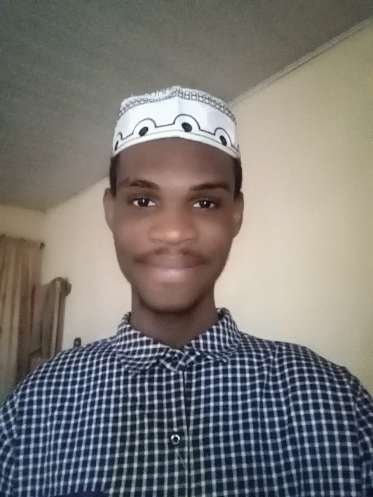

Ibrahim Aminu
Software Engineer

Summary
Coding has been my passion ever since I learnt about it. I keep exploring and learning while using my skills to build and solve
real world problems. I love programming, precisely because it makes me think, allows me to be creative and let's me try out
new things.
My goal is to be a successful Software Engineer dedicated to building and crafting solutions with my skills, and touching the
lives of people in the process.
My motto: Humility, Patience and Hardwork.
Education
- Primary School: Graduated from Prestige International Schools. (2013)
- Secondary School: Graduated from Halim Academy. (2020)
- University: Currently studying Bsc. Computer Science at Ahmadu Bello University, Zaria. (2022 - present)
Work Experience
- Tutor:
- Mathematics and physics tutor at Annur Academy. (Sep 2021 - Dec 2022)
- Improved in my Communication and Management Skills.
- Automobile Paint & Design:
- Helped in the repainting and designing automobiles in the Garage.
- Collaborated with other workers in the process and acquired crucial team work skill.
- Software Engineering Intern at ALX:
- Completed a one year Software Engineering Internship with AlX. (2022 - 2024)
- Learnt Software Engineering practices including: right documentation, web stack debugging, web monitoring, containerization, On call, Stand up meetings, pair programming etc.
- Completed projects with C, python and JavaScript. Learnt System Engineering and devops.
- Got hands on practice on real world projects, notably the Airbnb Clone Project.
Skills
Soft Skills
- Mentoring
- Communication
- Time Management
- Team Work
- Leadership and Management
- Fluent in : Arabic, English, Igala, Hausa and Pidgin.
Technical Skills
- Web Development
- Programming
- Data Structures and Algorithms
- Database Design
- Linux System Administration
- Literacy in : Arabic and English
Programming Languages and Tech Stack
Python, Flask(Web development)
C, Java, C++.
Javascript, nodejs for backend, react for frontend
MySql, MongoDB, PostgreSql
Highlight of some assumed roles and responsibilities
- Head Prefect at Halim Academy (2019 - 2020)
- Deputy Wakeel of Faculty of Sciences, Ahmadu Bello University, Zaria (2024 - present)
- Alx Mentor (2022)
Awards, Certifications and Achievements.
- Best Graduating Student at Halim Academy.
- Second prize winner at Know Your Deen National Quiz (2024).
- Alx Certified Software Engineer.
About Me
Contact me
View My Projects